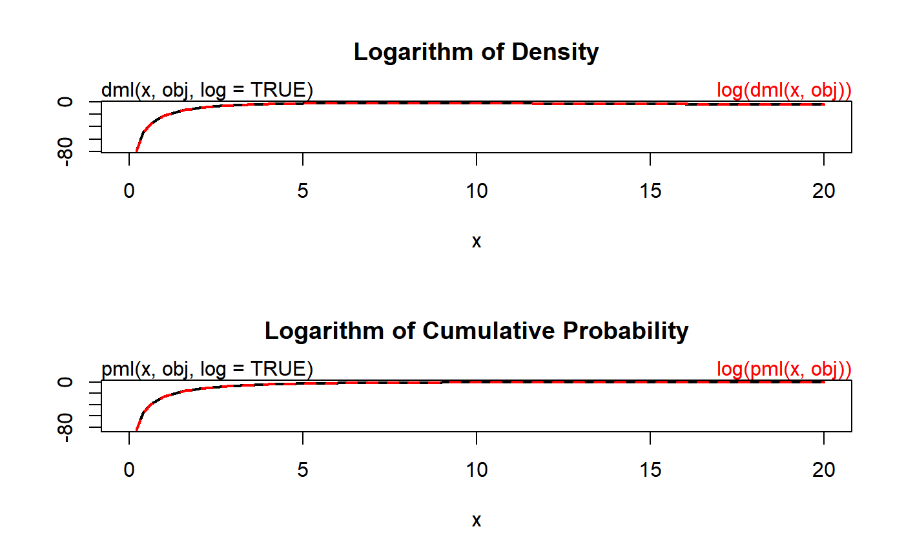

Density, distribution function, quantile function and random generation for a univariate distribution estimated by maximum likelihood.
dml(x, obj, log = FALSE) pml(q = q, obj, lower.tail = TRUE, log.p = FALSE) qml(p = p, obj, lower.tail = TRUE, log.p = FALSE) rml(n = n, obj)
| x, q | vector of quantiles. |
|---|---|
| obj | an |
| log, log.p | logical; if |
| lower.tail | logical; if |
| p | vector of probabilities. |
| n | number of observations. If |
dml gives the density, pml gives the distribution
function, qml gives the quantile function, and rml
generates random deviates.
dml is the density, pml is the distribution function,
qml is the quantile function, and rml is the random variable
generator.
These functions work like their counterparts in `stats`, e.g. Normal.
The univariateML object contains both maximum likelihood estimates
and the identity of the model these estimates were calculated under. These
functions are wrappers around underlying density, distribution, quantile and
random generation functions where unknown parameters are filled with the
maximum likelihood estimates. See the example.
## Simple example obj = mlnorm(airquality$Wind) dml(0.5, obj) == dnorm(0.5, mean = obj[1], sd = obj[2])#> [1] TRUE## We study the Beta prime model applied to the airquality data set. obj = mlbetapr(airquality$Wind) ## Example copied from 'stats::dnorm'. par(mfrow = c(2,1)) plot(function(x) dml(x, obj, log = TRUE), from = 0, to = 20, main = "Logarithm of Density", ylab = NA, lwd = 2) curve(log(dml(x, obj)), add = TRUE, col = "red", lwd = 2, lty = 2) mtext("dml(x, obj, log = TRUE)", adj = 0) mtext("log(dml(x, obj))", col = "red", adj = 1) plot(function(x) pml(x, obj, log = TRUE), from = 0, to = 20, main = "Logarithm of Cumulative Probability", ylab = NA, lwd = 2)